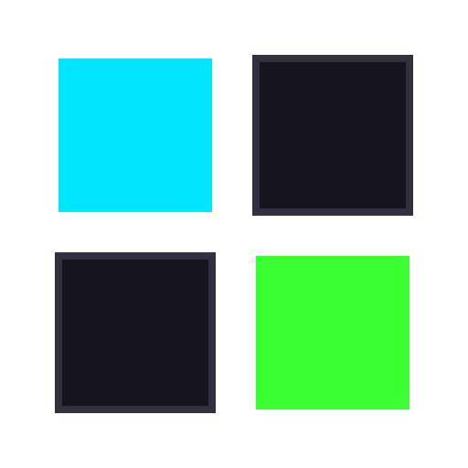
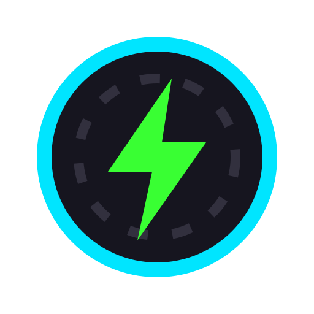
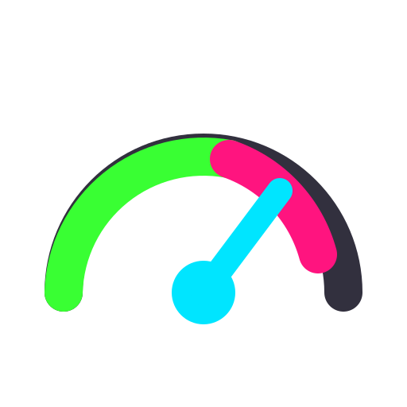
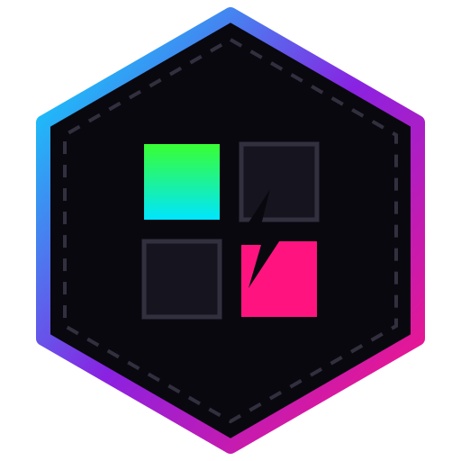
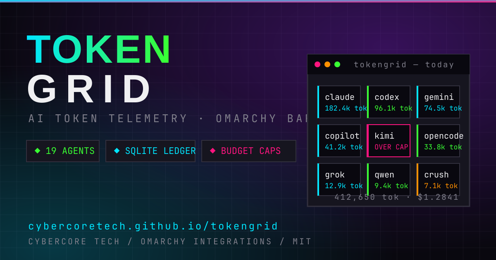
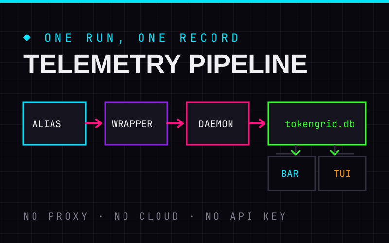
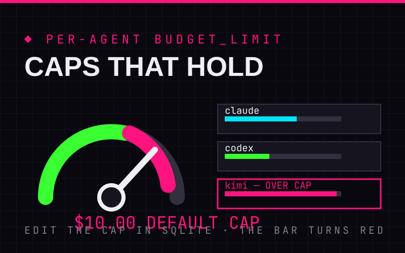
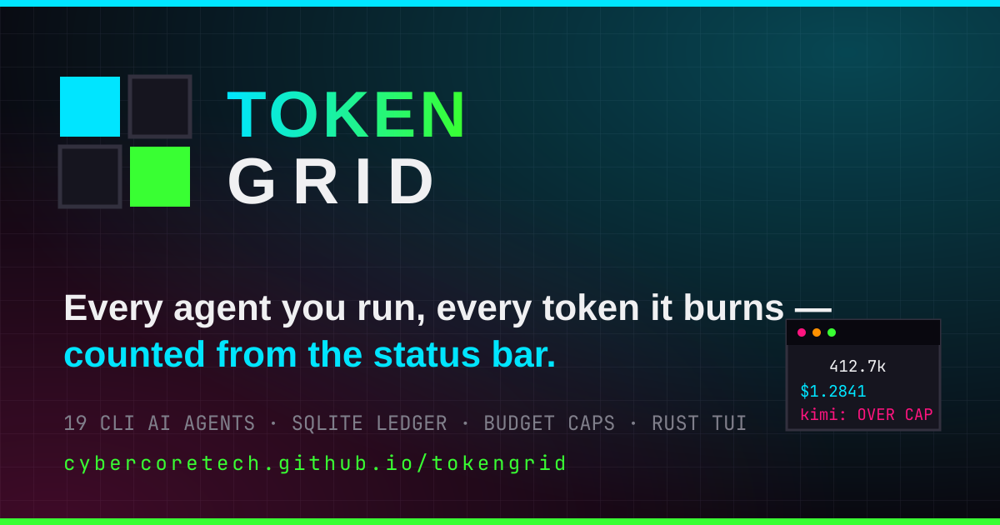
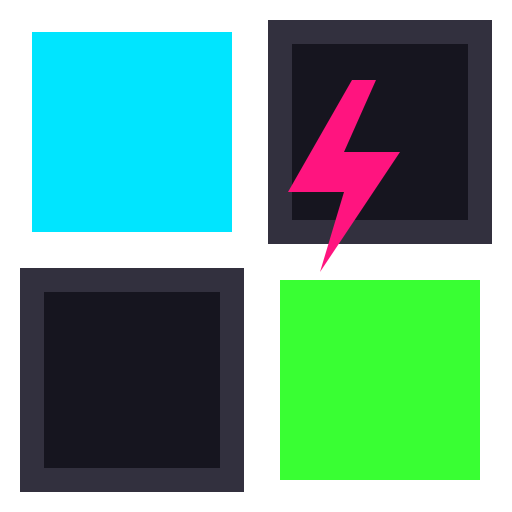
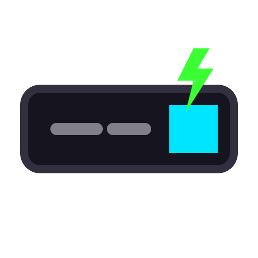

AI token telemetry · Omarchy · Rust · ratatui
TOKEN
GRID
Every agent you run, every token it burns — counted in one local ledger.
A bar payload puts today's tokens and dollars in the status bar. A zsh wrapper watches 19 CLI AI agents as they execute and writes each run into a local SQLite ledger — every row tagged measured or estimated. One click opens a Rust TUI hub: totals on top, the full roster with budgets below, and add, delete and settings from the keyboard. Nothing leaves your machine.
01 / Pipeline
One run,
one record.
No proxy, no cloud, no API key. Your alias runs the agent, the wrapper times it, the daemon writes the row, and both surfaces read the same file. Five hops, all local.
ALIAS
config/tokengrid_aliases.zsh wraps all 19 agent commands in your shell.
WRAPPER
bin/agent_wrapper.sh executes the agent, times it, and writes an estimated baseline row.
DAEMON
bin/tokengrid_daemon.py logs agent, model, tokens and cost with a provenance tag.
LEDGER
data/tokengrid.db — SQLite token_usage (measurement_type) + agents; path overridable via TOKENGRID_DB_PATH.
SURFACE
Bar payload and Rust TUI render the same rows, instantly.
02 / Coverage
Nineteen agents,
one ledger.
The roster is pre-seeded the first time the daemon runs — each agent gets a row with a default model and a budget cap you can edit. Add the source line to ~/.zshrc and every command below starts reporting.
THE ROSTER
INITIAL_AGENTS inserts every wrapper on first run with INSERT OR IGNORE — rerun it as often as you like, nothing duplicates.
BUDGET CAPS
Every agent carries budget_limit REAL DEFAULT 10.0. The table keeps every cap beside today's burn — you see the gap long before the invoice does.
SYSTEM METRICS
metrics-collector.py samples CPU, memory, disk and network via psutil into daily, weekly and monthly JSON aggregates.
03 / The TUI
Totals first,
rows after.
Click the bar icon and Ghostty opens the compiled binary in a precision-floated window. Today's totals sit on top; underneath, the whole roster — model, budget, today's burn — and vim keys take you everywhere else in the hub.
- Daily overview — today's measured tokens, total cost and monitored agents, one bordered line.
- Agent table — name, model, budget, tokens and cost today;
j/kto move, Enter to open. - Drill-down — per-agent today and 7-day totals plus the last eight runs, each row tagged measured or estimated.
- Full control — add an agent, delete one by typing its name, or open settings for the DB path, the $50 daily cap and webhook — no restart.
❯ tokengrid_daemon.pyMeasured: 412650 tok | $1.2841Estimated: 96450 tok | $0.0060❯ tokengrid-tui # what the bar icon opens┌ TokenGrid Telemetry Hub -------------------┐│ Today's Total Tokens: 412650 ││ Total Cost: $1.2841 · Monitored Agents: 19 ││ AGENT MODEL BUDGET TOKENS TODAY │└ j/k · Enter · a · d · s · q · esc → back ┘
DAILY OVERVIEW
Measured tokens, cost and agent count for today.
AGENT TABLE
Model, budget and today's burn — j/k to move.
DRILL-DOWN
Today and 7-day totals plus a provenance-tagged log.
FULL CONTROL
Add, delete and settings — no restart, no second window.
04 / Setup
Post
the grid.
Clone into the Omarchy plugins directory, build the TUI once, add the window rule, and rescan the shell. The bar widget brings its own Ghostty profile so the window title always matches.
git clone https://github.com/cybercoretech/tokengrid.git \
~/.config/omarchy/plugins/io.github.cybercoretech.tokengrid
cd ~/.config/omarchy/plugins/io.github.cybercoretech.tokengrid
./bin/build_tui.sh # cargo build --release -> bin/tokengrid-tui
./bin/build_tui.sh --install # same, plus copy it into the plugin dir
# register the bar widget + window rule
omarchy-shell shell rescanPlugins
omarchy restart shell
hyprctl reload# ~/.zshrc — starts counting every agent you run
source ~/.config/omarchy/plugins/io.github.\
cybercoretech.tokengrid/config/tokengrid_aliases.zsh-- TokenGrid TUI Monitor Floating Rule
hl.window_rule({
match = { title = "TokenGrid" },
float = true,
size = "1100 650",
center = true
})gtk-single-instance = false # isolated process…
title = TokenGrid # …unique window title- Bar icon sits in the right section; left-click runs
helpers/launch-tokengrid.sh.
05 / Asset pack
Take
the pack.
Everything on this page was drawn for TokenGrid and ships in docs/assets/ — SVG sources, PNG renders, icon set, hero card, feature cards. Pull them for docs, bar mocks, or your own dashboards.










FEATURE CARDS
Four card graphics matching the sections on this page: telemetry pipeline, budget caps, agent roster, bar widget.





FAVICON + MANIFEST
Favicon sources at every size plus pack.json — the manifest lists every file, type and purpose in the pack.

06 / Theme matrix
Light
the grid.
Every Cybercore palette from the shared schema, grouped by family — plus TokenGrid's own 12 signature mashups. Your pick follows you across Cybercore sites.